Nanotelescópios para ciência e divulgação
Uma rede trinacional de nanotelescópios integrando ciência, educação e ciência cidadã.
🇧🇷 Brasil · 🇨🇱 Chile · 🇦🇷 Argentina | Dados abertos · Ciência cidadãMetas e Impacto
Monitoramento de variabilidade estelar, movimentos próprios em aglomerados abertos, paralaxe de asteroides e ocultações estelares.
Formação de estudantes e professores, com materiais didáticos e oficinas práticas de astronomia.
Qualquer pessoa com um nanotelescópio pode contribuir. As observações são enviadas para um hub central, reduzidas e disponibilizadas à comunidade.
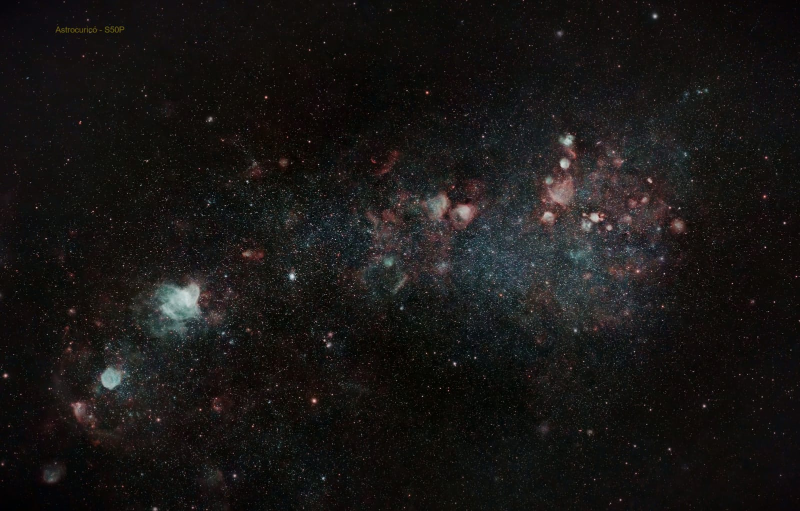
.jpg)

Nanotelescópios: telescópios portáteis
Nanotelescópios SeeStar S50 adquiridos e em fase de testes, distribuídos entre instituições parceiras. Abertura de 50 mm, câmera CMOS com filtro IRCUT. Opera em modo Alt-Az ou equatorial (com cunha). Sensibilidade similar ao filtro BP do Gaia, permitindo fotometria precisa até magnitude 13.
Curvas de luz (variabilidade estelar ou de asteroides); posições precisas (astrometria) e movimentos próprios; paralaxe e ocultações estelares; rotação do Sol.
Infraestrutura de processamento e armazenamento em nuvem, com pipeline de redução automática. Plataforma online: https://t05.iag.usp.br/. Scripts para operação remota e agendamento de observações, integrados com o hub: envie seus frames, receba dados calibrados e acesse curvas de luz.
O Projeto Nanotelescópios utiliza telescópios inteligentes (atualmente ZWO Seestar S50) para pesquisa, educação e divulgação em Astronomia, criando ferramentas e atividades para ajudar diferentes públicos a usar facilmente os telescópios, coletar dados, aprender sobre diferentes tópicos de Astronomia, Física e Matemática e/ou ajudar astrônomos a publicar artigos científicos.
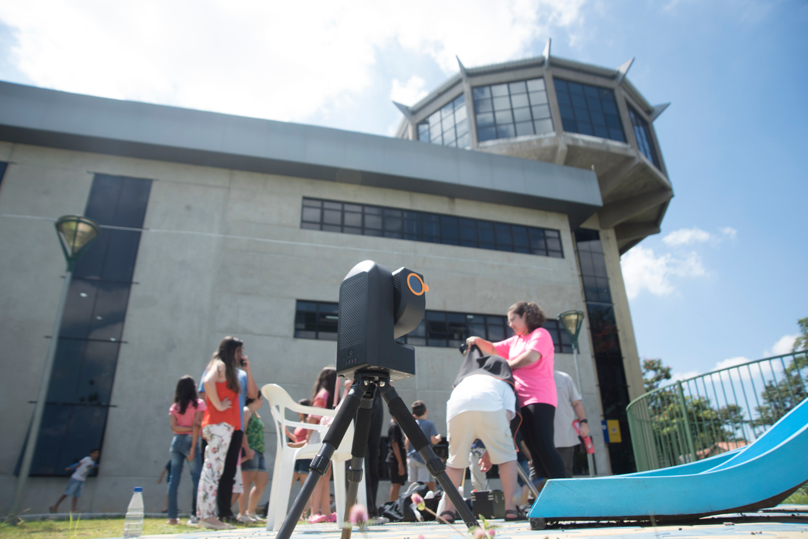
O plano original consistia em dedicar um conjunto de nanotelescópios (cerca de 10 deles) para um levantamento da variabilidade de objetos celestes observados em nossa Galáxia. Outro conjunto de telescópios (outros 10 ou mais) será dedicado à realização de observações por astrônomos amadores e profissionais, ou até mesmo por estudantes ou pelo público em geral (orientados por astrônomos profissionais). O plano inicial de um projeto piloto de ciência cidadã foi iniciado com um número pré-selecionado de alvos de interesse científico escolhidos por nossa equipe (que atualmente são: estrelas variáveis, asteroides, aglomerados abertos, trânsitos). As iniciativas são coordenadas por astrônomos profissionais de diferentes universidades no Brasil, Argentina e Chile.
O principal objetivo de ambas as iniciativas: o levantamento da variabilidade da Galáxia e o projeto de ciência cidadã, é coletar dados que possam ser úteis para o avanço científico e a publicação de artigos, ao mesmo tempo em que servem a propósitos educacionais e de divulgação.
.jpg)
A área a ser coberta pelo primeiro grupo de cerca de 10 telescópios é de 600 graus quadrados do céu, selecionados a partir de campos já observados pelo telescópio robótico brasileiro T80-South e pelo levantamento Southern Photometric Local Universe Survey (S-PLUS). Os campos serão centrados no sistema de coordenadas equatoriais em AR=90° e DEC=−30° para o bojo, e AR=110° e DEC=−30° para o disco de nossa Galáxia. Se esses campos se mostrarem muito povoados para o tamanho de pixel do Seestar S50 (2,4 segundos de arco por pixel), adaptaremos os alvos.
O Projeto Nanotelescópios visa aumentar a visibilidade pública da Astronomia e gerar interesse no uso de telescópios e na exploração mais profunda de tópicos astrofísicos de maneira envolvente, potencialmente atraindo jovens para o estudo da ciência. Também busca aproximar as comunidades do Brasil, Chile e Argentina neste projeto piloto, que é de interesse para astrônomos dos três países. Se for bem-sucedido, a escala e o alcance do projeto serão ampliados no futuro, em particular para escolas no Brasil.
.jpg)
O Projeto Nanotelescópios faz parte de uma iniciativa maior para instalar um telescópio de 2 m no Cerro Tololo Inter-American Observatory, cujo principal objetivo será o acompanhamento de fontes descobertas pelo Vera Rubin Observatory.
Do ponto de vista da educação científica, estudantes podem aprender e desenvolver habilidades em processamento de imagens, análise de dados e nos fundamentos da operação de telescópios. A experiência com formatos digitais de dados, como imagens .fits, expõe os usuários a condições semelhantes às encontradas em pipelines profissionais de processamento de dados, aproximando-os das práticas e métodos utilizados em cenários reais. Com o treinamento adequado, estudantes e professores podem se engajar em temas de pesquisa que oferecem oportunidades únicas.
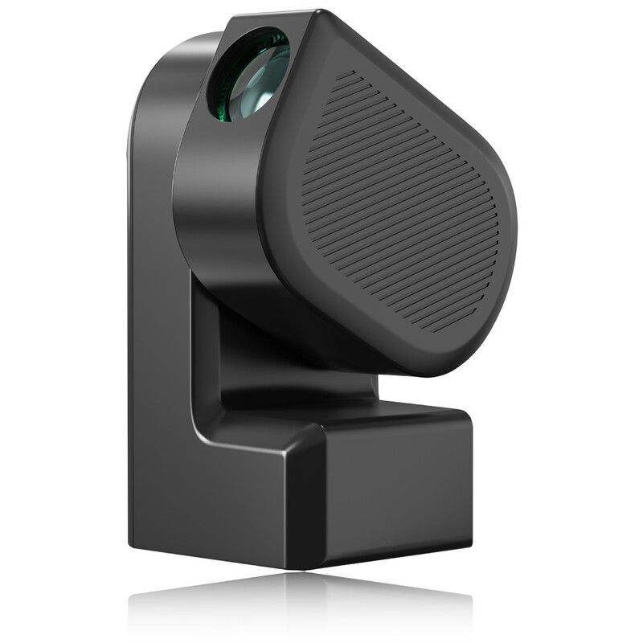
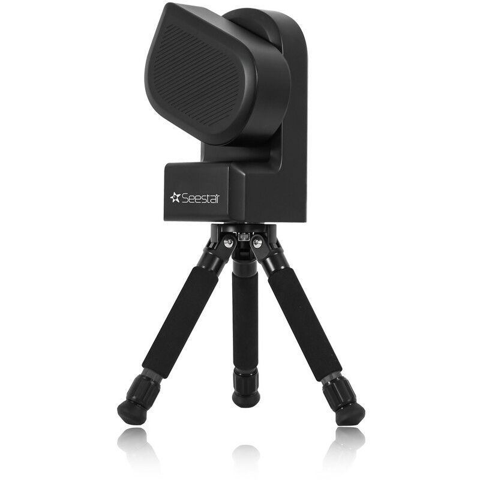
Duas imagens de um mesmo nanotelescópio. Fonte: https://www.seestar.com/products/seestar-s50.
Em resumo, os nanotelescópios oferecem uma excelente relação custo-benefício, e sua facilidade de uso os torna adequados para fins educacionais e de divulgação, bem como para tópicos científicos focados. Acreditamos que eles fornecerão a estudantes e professores ferramentas que antes eram reservadas apenas para profissionais.
Os nanotelescópios (telescópios portáteis), que utilizamos em nosso Projeto, são do tipo óptico. Eles captam imagens no espectro de luz visível (o SeeStar S50 até um pouco além, na faixa entre 380 nm e 1100 nm) e usam associações de lentes para formar imagens de planetas, asteroides, nebulosas, estrelas e aglomerados, por exemplo.
O olho como telescópio
.jpg)
O olho, primeiro instrumento que voltamos ao céu, é uma ferramenta natural para a observação do céu e suas estrelas; no entanto, sozinho, não é suficiente para estudar a fundo astros que compõem a esfera celeste. Aqui entra o papel dos telescópios: não para simplesmente aproximar pontos brilhantes e distigui-los entre o que, hoje, são classificados como planetas, estrelas, asteroides e cometas, mas para captar radiações que a capacidade de visão humana, por si só, não capta e transformá-las em informação que possamos medir e comparar. Essa capacidade de converter o “invisível” em dados faz do telescópio um dos símbolos centrais da Astronomia, e não é incomum que a ideia desta seja atrelada àquele no imaginário popular.
Vale notar que, essa “datificação”: a transformação da experiência visual em dados, medidas físicas catalogadas, facilitou e facilita a inclusão e ampliação da abordagem de entendimento do funcionamento celeste por pessoas cegas ou com perda visual.
Telescópio óptico
.jpg)
Os telescópios, para além de aumentar o tamanho aparente daquilo para qual o apontamos, também proporcionam maior poder de resolução (facilitando a distinção de detalhes finos) e permitem exposições mais curtas ou longas do que poderíamos ver sem outro auxílio. A luz (e demais ondas eletromagnéticas) após ser captada é concentrada, convergida em uma região menor e mais próxima ao nosso olho (ou a outro detector). Essa convergência se dá por um mecanismo próprio de cada telescópio e depende: do que se quer ver, por quanto tempo, com qual resolução, etc. No caso dos telescópios ópticos, este mecanismo são as lentes e espelhos!
Os grandes telescópios de observatórios terrestres costumam ser instalados em regiões de maior altitude e em que há baixa umidade relativa do ar, sobre as quais a atmosfera apresenta maior transparência e estabilidade (uma das principais razões pela qual, por vezes, vemos estrelas sibilarem). Regiões montanhosas tal como a de Cerro Pachón, em que o Observatório Vera C. Rubin está situado. Um dos objetivos do Projeto Nanotelescópios é justamente acompanhar as fontes que têm sido descobertas por ele.
Um dos parâmetro mais fundamentais de um telescópio é a abertura: o diâmetro de sua lente ou espelho principal. Quanto maior ela for, mais radiação o instrumento reúne e maior é sua capacidade de detectar objetos fracos e resolver detalhes finos. A resolução também varia conforme o comprimento de onda observado e as condições do ambiente, como a atmosfera terrestre. No caso do Seestar S50 ela é de 50 mm, com três elementos de lente com o objetivo para corrigir as aberrações. Para saber mais sobre especificações do SeeStar S50, acesse a aba “Como observar?”
Há ainda os levantamentos de todo o céu, que varrem grandes áreas em vez de observar apenas um alvo por vez. Eles produzem mapas e catálogos que revelam desde asteroides e cometas até estrelas variáveis e galáxias distantes. Esses projetos complementam as observações detalhadas de telescópios individuais.
Assim, o telescópio é uma extensão refinada dos nossos sentidos. Cada avanço tecnológico amplia nossa percepção do cosmos, e diferentes comprimentos de onda revelam processos distintos. A Astronomia moderna depende de múltiplos instrumentos, em terra e no espaço, trabalhando em conjunto para construir uma compreensão cada vez mais completa do universo.
Referência
CARROLL, Bradley W.; OSTLIE, Dale A. An Introduction to Modern Astrophysics. 2nd ed. San Francisco: Pearson Addison-Wesley, 2007. p. 141-172. ISBN 0-321-44284-9.
Conheça o céu e prepare suas observações com o nanotelescópio Seestar S50.
O céu muda durante a noite e ao longo do ano. Entender esses movimentos nos ajuda a escolher o que observar, a encontrar os objetos e a interpretar as imagens. O Seestar S50 automatiza o apontamento e o acompanhamento de muitos alvos, mas uma boa observação começa com perguntas simples: onde olhar, quando observar e o que podemos aprender?
O que vemos no céu?
.jpg)
Estrelas, planetas, luas, aglomerados, nebulosas e galáxias do céu que podemos explorar. As estrelas das constelações parecem formar desenhos, mas frequentemente estão a distâncias muito diferentes. Para organizar posições, usamos uma esfera celeste imaginária: ela funciona como um mapa das direções para as quais olhamos, não como uma esfera física onde os astros estariam presos.
As constelações são regiões oficialmente delimitadas do céu. Reconhecer o Cruzeiro do Sul ou Órion ajuda na orientação, mas observar um objeto pequeno exige saber sua posição com mais precisão.
Por que o céu muda?
A rotação da Terra faz com que estrelas e outros astros pareçam se deslocar de leste para oeste ao longo da noite. Já o movimento orbital da Terra ao redor do Sol faz com que a parte do céu visível à noite mude com as estações. Por isso, um objeto excelente para observar em determinada época pode estar próximo demais da direção do Sol em outra.


Para planejar a observação, vale consultar um mapa celeste ou aplicativo de planetário configurado para o local e a data. É importante lembrar que o céu visto no Brasil, na Argentina ou no Chile depende também da latitude do observador.
Como encontramos um objeto?
Há duas maneiras especialmente úteis de indicar uma posição no céu. A altura é o ângulo acima do horizonte; o azimute indica a direção ao longo do horizonte, medida do norte para o leste. Essas medidas mudam com o lugar e a hora. Já a ascensão reta e a declinação são coordenadas usadas em catálogos astronômicos, semelhantes à longitude e à latitude de um mapa da Terra.
O Seestar dispõe de recursos de localização automática, mas o observador ainda precisa verificar se o alvo está visível e se não há árvores, prédios ou outros obstáculos na direção escolhida.
Quando vale a pena observar?
Em geral, prefira noites sem nuvens, com boa transparência do céu, e alvos relativamente altos sobre o horizonte. Próximo ao horizonte, a luz atravessa mais atmosfera, o que reduz a qualidade da imagem.
A Lua iluminada e a poluição luminosa dificultam especialmente a observação de galáxias e nebulosas tênues. Para a Lua, entretanto, o próprio brilho lunar não é um problema: muitas crateras ficam particularmente interessantes perto da linha entre a parte iluminada e a escura.
O que registramos com o S50?
O Seestar S50 combina um telescópio compacto de 50 mm com uma câmera e recursos automáticos de observação e composição de imagens. Exposições sucessivas podem ser combinadas para revelar objetos que nossos olhos não percebem diretamente. O resultado depende do céu, do tempo de integração e do processamento: uma imagem obtida com esse equipamento não deve ser confundida com a aparência visual a olho nu.
Fotografia S50 indicada — Lua Exemplo de imagem lunar feita com Seestar S50; adequada para ilustrar crateras, mares e a importância da iluminação. Abrir fotografia original e conferir condições de uso: https://commons.wikimedia.org/wiki/File:2025-11-03-181511-Lunar.jpg Crédito: どがさん — CC0 1.0
Fotografia S50 indicada — Galáxia de Andrômeda (M31) Exemplo de uma galáxia fotografada com o mesmo modelo de nanotelescópio; permite introduzir a ideia de luz acumulada e de objetos fora da Via Láctea. Abrir fotografia original e conferir condições de uso: https://commons.wikimedia.org/wiki/File:Stacked_13_M_31_10.0s_IRCUT_20251129-195600.jpg Crédito: どがさん — CC0 1.0
Fotografia S50 indicada — Nebulosa de Órion (M42) Escolher nesta categoria uma fotografia identificada como produzida com S50; serve para explicar regiões onde estrelas se formam. Abrir fotografia original e conferir condições de uso: https://commons.wikimedia.org/wiki/Category:Taken_with_ZWO_Seestar_S50 Crédito: Fotógrafo e licença: confirmar na página específica do arquivo


Como uma imagem vira ciência?
Uma fotografia bonita pode ser também uma medida. Se registrarmos uma estrela em várias noites e compararmos seu brilho com o de estrelas de referência, poderemos investigar variações de luminosidade. Em outras campanhas, imagens sucessivas permitem localizar asteroides em movimento em relação às estrelas de fundo. A repetição das observações, o registro das condições e o tratamento cuidadoso dos dados são essenciais para que o resultado possa ser analisado e comparado.
Uma rede de nanotelescópios em diferentes localidades oferece oportunidades de observação coordenada e de participação de estudantes. Nem todo alvo ou imagem será adequado para uma medida científica; é a escolha de uma pergunta, juntamente com um procedimento consistente, que transforma a observação em pesquisa.
.jpg)
Antes de começar
- Escolha um alvo visível na data e no local da observação. (Para saber a posição no céu, você pode usar: COLOCAR ALGO AQUI)
- Confira previsão do tempo, cobertura de nuvens, posição da Lua e obstáculos no horizonte.
- Prefira observar o alvo quando estiver relativamente alto no céu.
- Verifique: bateria, nivelamento e conexão do equipamento.
- Anote sempre data, local, alvo e condições, para uso e análise posterior; especialmente em campanhas científicas.
Asteroides e Cometas
Com um nanotelescópio, é possível observar ocultações causadas por tipos de asteroides sobre estrelas de fundo, dada sua capacidade de realizar medições sucessivas ao longo do tempo. Algumas ocultações produzem efeitos que podem durar dezenas de segundos, e o registro desses fenômenos de diferentes locais da Terra permite determinar as dimensões e a forma dos objetos de uma maneira que é inviável até mesmo com imageamento direto por grandes instrumentos. No caso de cometas, o imageamento a partir de vários locais de cada país proporciona uma excelente vitrine para a divulgação científica, com material de grande impacto visual.
COLOCAR IMAGENSOcultações estelares
As observações de fenômenos transitórios, como ocultações estelares, são extremamente importantes para o estudo dos pequenos corpos do Sistema Solar. O Sistema Solar possui diversas regiões povoadas por asteroides e outros objetos, como o Cinturão Principal de Asteroides e o Cinturão de Kuiper. O estudo dessas populações fornece pistas fundamentais sobre a formação e a evolução do Sistema Solar.
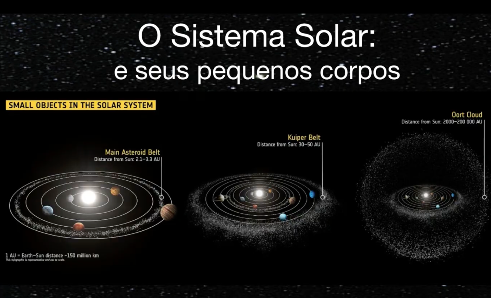
Legenda da imagem.
Os asteroides, na maioria das vezes, aparecem em imagens como simples pontos de luz. Devido ao seu pequeno tamanho e à grande distância, não é possível observar diretamente suas formas a partir da Terra com telescópios comuns. As imagens detalhadas que mostram suas superfícies geralmente são obtidas por missões espaciais (sondas).
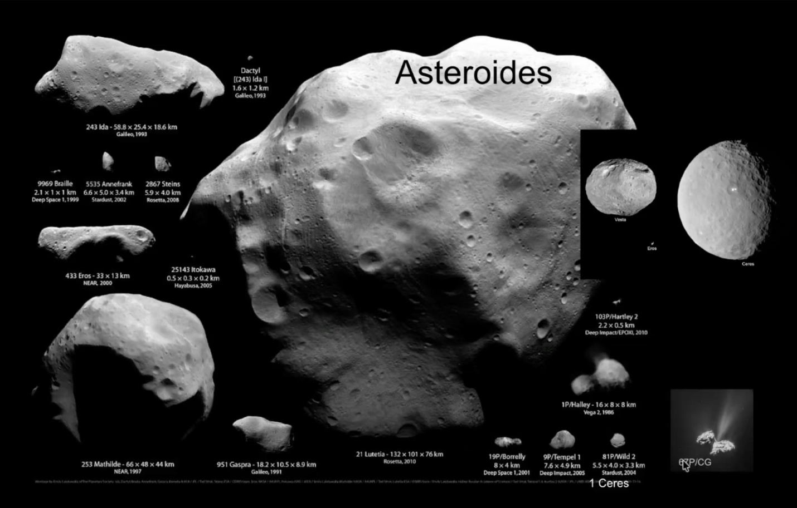
Legenda da imagem.
Que propriedades físicas destes objetos podemos descobrir?
Determinar a forma desses objetos, especialmente os chamados objetos transnetunianos, é um grande desafio, pois eles ocupam uma região muito pequena no céu.
Uma das formas mais eficazes de estudar esses objetos é por meio das ocultações estelares. Esse fenômeno ocorre quando um asteroide passa em frente a uma estrela, bloqueando temporariamente sua luz. Essa “sombra” projetada pelo objeto pode ser observada na Terra. Ao registrar o instante em que a estrela desaparece e reaparece, conseguimos medir a duração da ocultação.
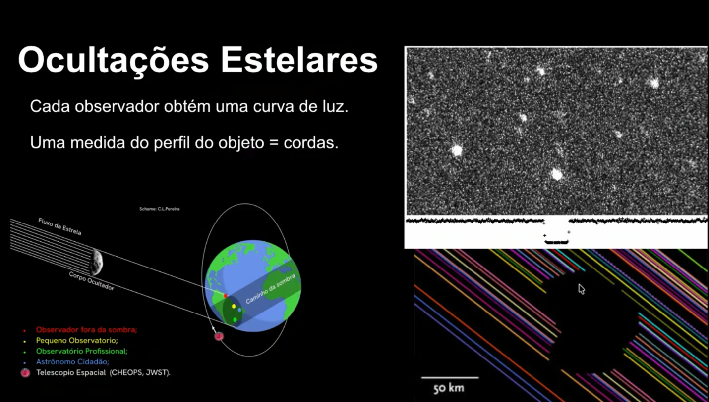
Legenda da imagem.
Quanto maior o número de observações distribuídas geograficamente, mais preciso será o cálculo do tamanho e da forma do asteroide. Esse método permite reconstruir o perfil do objeto com boa precisão.
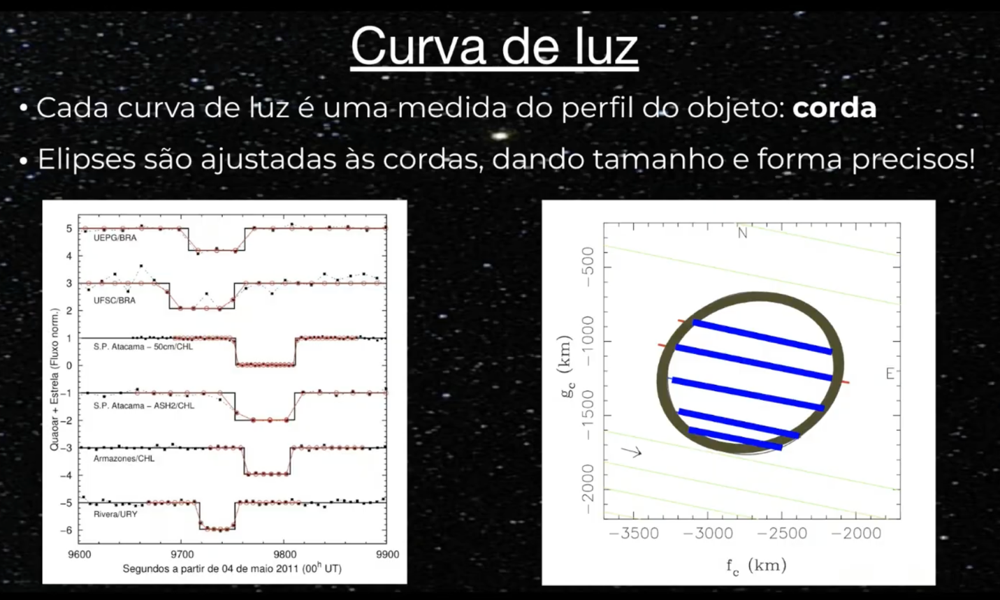
Legenda da imagem.
Por exemplo, já foram realizados estudos em que o tamanho de um asteroide foi determinado com base em observações feitas em diferentes pontos do sul da América do Sul, combinando os dados de vários observadores.
Além do tamanho e da forma, também é possível estimar o albedo do objeto, que é a fração de luz refletida por sua superfície.
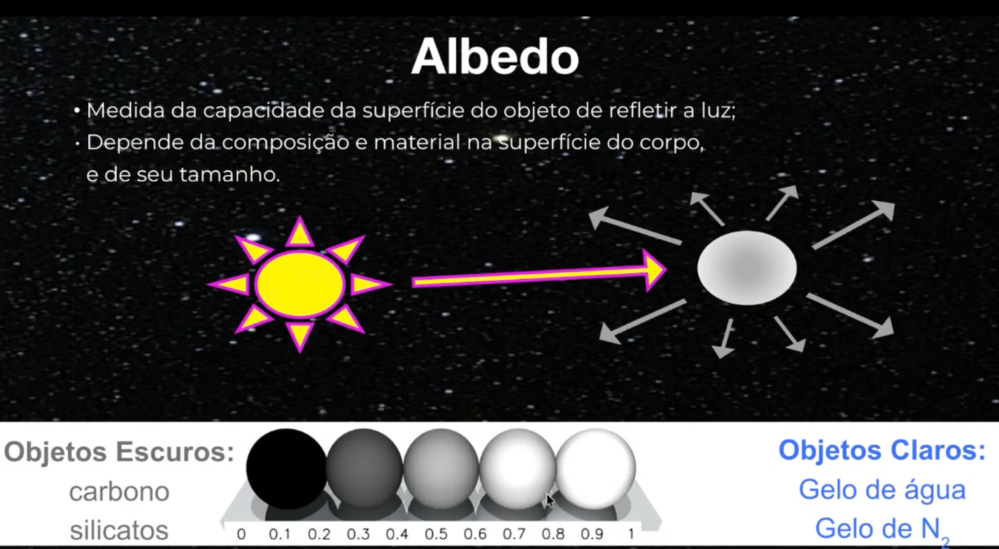
Legenda da imagem.
Combinando o albedo com outras medições, podemos inferir propriedades físicas importantes, como a composição superficial.
Em alguns casos, quando há informações adicionais (como massa estimada, por exemplo, a partir da presença de satélites naturais), é possível também calcular a densidade do objeto, o que fornece pistas sobre sua estrutura interna (se é rochoso, metálico ou mais poroso).
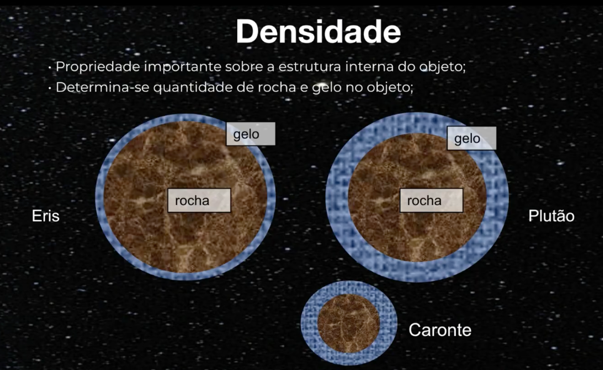
Legenda da imagem.
Ainda mais!
As ocultações estelares também podem levar a descobertas surpreendentes. Em certas situações, observa-se mais de uma queda de brilho durante o mesmo evento, indicando que dois objetos passaram em frente à estrela, o que pode levar à descoberta de novos asteroides.
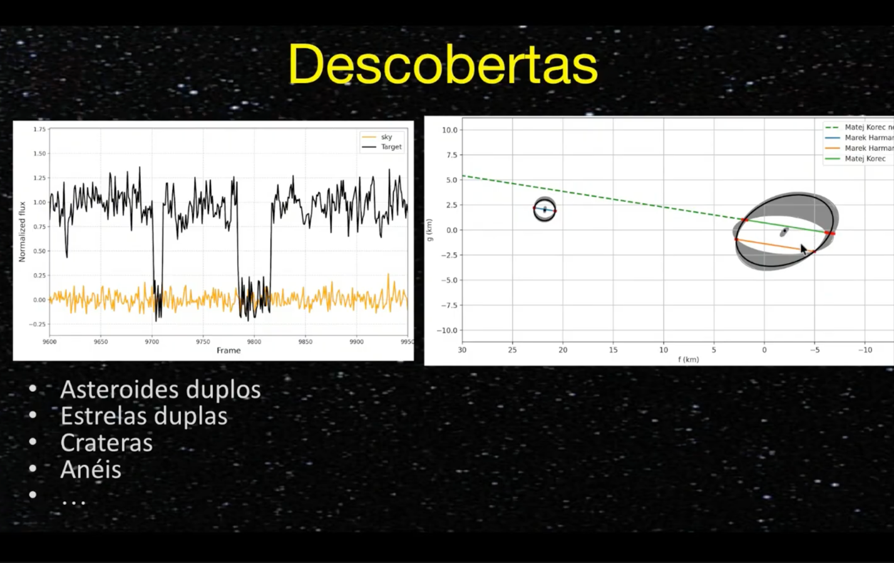
Legenda da imagem.
Além disso, esse tipo de observação pode revelar a existência de estrelas duplas, quando a luz da estrela desaparece em etapas, indicando que há duas fontes próximas sendo ocultadas separadamente.
Outro resultado fascinante é a detecção de anéis ao redor de asteroides. Pequenas quedas de brilho antes e depois da ocultação principal podem indicar a presença de material orbitando o objeto, formando sistemas de anéis; algo que antes se pensava existir apenas ao redor de planetas gigantes.
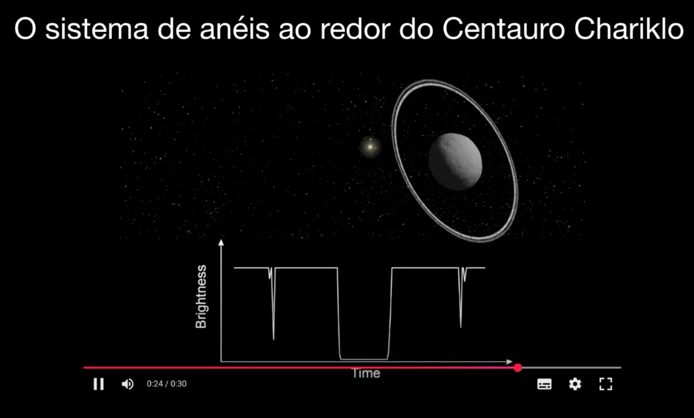
Legenda da imagem.
Várias descobertas foram feitas no Brasil:
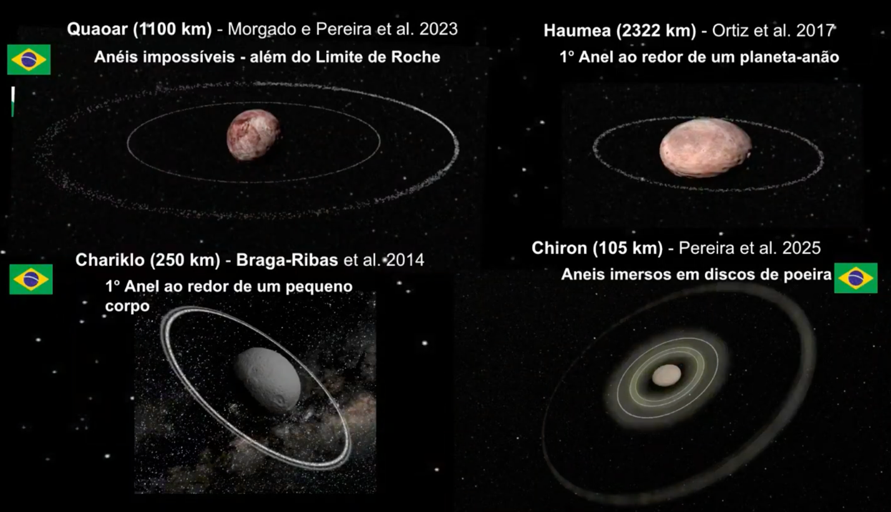
Legenda da imagem.
Embora desafiador, a observação de trânsitos de exoplanetas que causam uma diminuição no brilho da estrela hospedeira da ordem de alguns por cento também é viável, visto que algumas podem ser visíveis a olho nu! Aqui, a natureza desafiadora dessas observações oferece uma oportunidade para explorar os limites das capacidades dos nanotelescópios, como o S50.
Com agendamento cuidadoso e fotometria diferencial, observadores amadores e estudantes podem detectar sinais de trânsito, contribuindo para o refinamento de efemérides e até mesmo descobrindo novos trânsitos ao redor de estrelas brilhantes do sul.
COLOCAR IMAGENSReferência
RIBAS, Felipe Braga. Ocultações estelares: os 10 anos da descoberta dos anéis de Chariklo e os avanços no estudo do Sistema Solar. Cadernos de Astronomia, vol. 5, n. 2, p. 56-64, 2024.
Estrelas Variáveis
Dadas as qualidades do sensor CMOS usado no nanotelescópio S50, por exemplo, como sensibilidade, baixo ruído e excelente linearidade, é possível acompanhar a variabilidade de objetos pulsantes, sistemas binários eclipsantes e objetos que exibem variações imprevisíveis de brilho. A experiência mostra que, com uma abertura de apenas 50 mm e tempos de integração de vários minutos, é possível observar objetos que são alvos até mesmo de campanhas que utilizam o Telescópio Espacial Hubble.
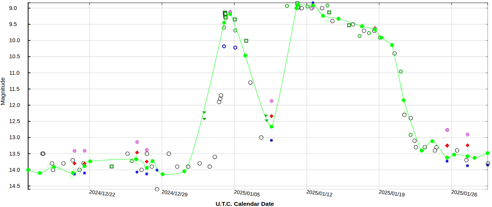
Gráfico com o outburst (surto/erupção) “normal” seguida por um mínimo e um super-outburst no sistema binário (do tipo variável cataclísmica) VW Hyi. Acesse a imagem (e sua legenda) clicando aqui; nela, pode-se exibir graficamente a cobertura das outbursts em diferentes escalas de tempo.
COLOCAR FUNÇÃO DE AMPLIAR IMAGEMUm exemplo de um fenômeno que, quando observado ao longo do tempo, pode fornecer informações valiosas sobre eventos transitórios é mostrado na figura acima: o sistema binário VW Hydri; em que múltiplas observações foram feitas usando lentes com abertura de 50 mm (semelhante à dos telescópios S50). Trata-se de um sistema binário com transferência de massa entre duas estrelas: uma semelhante ao Sol, mas um pouco mais fria e de menor massa, que transfere material para uma anã branca, um objeto extremamente compacto com massa semelhante à do Sol comprimida em uma esfera do tamanho da Terra.
A transferência de massa ocorre da estrela “normal” para a anã branca, formando um disco de acreção, um fenômeno físico desconhecido até meados do século XX. O sistema apresenta aspectos intrigantes: outbursts (surtos/erupções) com variações de brilho que ultrapassam um fator de 100, causadas pelo aumento de luminosidade do disco de gás. O mecanismo exato por trás desses outbursts ainda é desconhecido. Curiosamente, VW Hydri exibe outbursts “normais” que ocorrem a cada 20 a 30 dias (não exatamente periódicas), bem como “super-outbursts” com intervalos mais longos.
Na figura, pode-se ver um comportamento sem precedentes: o que começou como um outburst normal, durando apenas alguns dias, foi seguido por uma diminuição de brilho e, imediatamente depois, por um que durou quase duas semanas. VW Hyi tem uma posição muito ao sul no céu (com declinação de cerca de -74° no sistema de coordenadas celestes equatoriais), o que a torna um alvo privilegiado para observação no Hemisfério Sul.
COLOCAR IMAGENSAglomerados Abertos
Supõe-se que estrelas jovens estejam próximas de seus locais de nascimento e tenham velocidades ainda muito semelhantes às iniciais. Nesse contexto, os movimentos próprios estelares são fundamentais para distinguir membros de aglomerados de estrelas de campo.
Com auxílio de um telescópio, o movimento próprio estelar pode ser observado pela mudança na posição celeste de uma estrela ao longo do tempo (em uma aproximação de primeira ordem, os movimentos próprios são calculados a partir de um ajuste linear das posições estelares em função do tempo). Em um gráfico, ao se traçar um diagrama vetorial de movimentos próprios, por exemplo, pode-se distinguir com facilidade as estrelas que compartilham um movimento comum (membros do aglomerado) daquelas com movimentos aleatórios (estrelas de campo, não ligadas gravitacionalmente). Com isso, e a partir combinação dos movimentos próprios dos membros do aglomerado com informações adicionais (como paralaxe e velocidade radial), é possível se reconstruir o movimento 3D e a história de formação estelar do aglomerado na Galáxia.
Propomos, então, observar aglomerados abertos com diferentes propriedades (idade, distância, número de membros etc.) com os nanotelescópios para medir as posições das fontes no campo ao longo do tempo e calcular movimentos próprios. Os movimentos próprios resultantes serão usados para discutir a pertinência ao aglomerado alvo do nosso projeto. Alternativamente, os dados coletados com os telescópios S50 também podem ser combinados com levantamentos astrométricos baseados em solo (ground-based) e com o catálogo Gaia para fornecer movimentos próprios mais precisos com uma base temporal estendida. Essa última abordagem pode nos permitir detectar desvios nos movimentos estelares, por exemplo, devido a binárias (desconhecidas) não detectadas. Além dos movimentos próprios estelares dos membros do aglomerado, podemos usar as mesmas imagens para procurar fontes de movimento rápido no campo (por exemplo, corpos menores do Sistema Solar) e investigar a variabilidade das fontes no campo (como discutido no tópico anterior, Estrelas Variáveis).
COLOCAR IMAGENSEstrelas...
Estrelas parecem pontos fixos, mas algumas mudam de brilho em escalas de tempo que vão de minutos a anos. O caso mais antigo registrado é o de Mira, na constelação da Baleia: em 1595, David Fabricius acompanhou seu desaparecimento e retorno, e o ciclo de cerca de onze meses foi estabelecido no século seguinte. Na época, atribuiu-se a variação a manchas escuras numa estrela em rotação; hoje se sabe que Mira pulsa: sua superfície se expande e se contrai, e o brilho acompanha esse movimento. Em 1784, John Goodricke identificou variações regulares em δ Cephei, com período de pouco mais de cinco dias. Essas duas estrelas inauguraram duas famílias de variáveis: as de longo período, com ciclos irregulares entre 100 e 700 dias, e as Cefeidas clássicas, cujo brilho varia de forma mais discreta e previsível. A importância das Cefeidas não está apenas no fenômeno em si, mas no que ele permite medir. Henrietta Swan Leavitt, trabalhando como calculadora no Observatório de Harvard, comparou fotografias de milhares de estrelas e percebeu que, nas Cefeidas da Pequena Nuvem de Magalhães, quanto maior o período, maior a luminosidade. Como todas estão aproximadamente à mesma distância, as diferenças de brilho aparente refletem diferenças intrínsecas. Isso deu origem à relação período-luminosidade: basta cronometrar o ciclo de uma Cefeida para estimar sua luminosidade e, comparando com o brilho observado, obter sua distância. A calibração exigiu esforço, mas o resultado transformou as Cefeidas em marcos cósmicos, visíveis a distâncias intergalácticas. Entender por que essas estrelas pulsam levou algumas décadas. Harlow Shapley argumentou, em 1914, que a hipótese de binárias era inviável: o tamanho necessário da estrela excederia a órbita do sistema. Ele propôs que estrelas individuais vibravam radialmente, como se respirassem. Eddington deu base teórica à ideia, e as observações de δ Cephei confirmaram: brilho, temperatura, raio e velocidade superficial variam em conjunto. A mudança de temperatura domina a variação de luminosidade; a variação de tamanho contribui menos. O brilho máximo ocorre quando a superfície se expande mais rapidamente, depois do raio mínimo: um atraso de fase que se explica pelo mecanismo que sustenta a oscilação. No diagrama H-R, a maioria das estrelas pulsantes ocupa uma faixa estreita e quase vertical à direita da sequência principal, chamada faixa de instabilidade. Estrelas entram e saem dessa faixa conforme evoluem, e por isso a pulsação é um fenômeno transitório: de cada cem mil estrelas, apenas uma pulsa no momento em que a observamos. As classes se distinguem por período, população e tipo de oscilação. As Cefeidas clássicas são supergigantes de população I, com períodos de 1 a 50 dias. As W Virginis são Cefeidas pobres em metais, cerca de quatro vezes menos luminosas para o mesmo período. As RR Lyrae são estrelas de ramo horizontal em aglomerados globulares, com períodos de horas e luminosidade semelhante entre si, outro recurso para medir distâncias. As δ Scuti são estrelas evoluídas de tipo F, próximas à sequência principal, com oscilações radiais e não radiais. As β Cephei são estrelas B quentes, com pulsações de poucas horas. As ZZ Ceti são anãs brancas pulsantes, com períodos de centenas a milhares de segundos. As variáveis de longo período, como Mira, são supergigantes vermelhas com envelopes convectivos extensos, e as roAp são estrelas Ap com campos magnéticos fortes e amplitudes ínfimas. A física da pulsação começa por uma relação simples: o período é inversamente proporcional à raiz quadrada da densidade média. Isso explica por que supergigantes pulsam em dezenas de dias e anãs brancas em segundos. O mecanismo que sustenta as oscilações foi identificado nas zonas de ionização parcial. Em camadas onde o hidrogênio ou o hélio estão parcialmente ionizados, a compressão não eleva a temperatura tanto quanto elevaria num gás neutro: parte da energia vai para ionizar mais átomos. Com temperatura menor, a opacidade aumenta e a camada absorve calor. Na expansão, os íons se recombinam, liberam energia e a opacidade cai. Esse ciclo funciona como uma válvula térmica, e recebe o nome de mecanismo κ, reforçado pelo mecanismo γ. A zona de ionização do He II, a cerca de 40.000 K, é a principal responsável por sustentar as pulsações dentro da faixa de instabilidade. A zona de ionização do hidrogênio, mais externa, desempenha papel mais sutil: ela se move em relação à superfície e produz o atraso de fase observado. Nos casos fora da faixa, como as β Cephei, o ferro assume o papel de agente da opacidade, graças ao grande número de linhas de absorção próximas de 100.000 K. Modelar esse comportamento exige equações que abandonam o equilíbrio hidrostático. Em cálculos não lineares, as camadas de massa são deslocadas e soltas, e a amplitude cresce ou decai até um ciclo limite. Esses modelos reproduzem curvas de luz assimétricas, mas consomem tempo computacional e podem apresentar comportamento caótico. Uma alternativa é linearizar as equações, supondo oscilações de pequena amplitude. O custo é que o resultado é forçado a ser senoidal e a amplitude final não pode ser determinada. Um modelo didático de uma zona (uma casca fina em torno de uma massa central) mostra que, para γ maior que 4/3, a estrela oscila harmonicamente; para γ menor que 4/3, ela colapsa. Essa condição reaparece no estudo de anãs brancas. Nem toda pulsação é radial. Em modos não radiais, algumas regiões da superfície se expandem enquanto outras se contraem. Esses padrões são descritos por harmônicos esféricos e se dividem em três famílias. Os modos p são ondas de pressão, com movimento concentrado nas camadas superficiais. Os modos g são ondas de gravidade interna, ligadas à flutuabilidade do material, e atingem o interior profundo. O modo f é uma onda de superfície, sem análogo radial. A frequência de buoyancy, ou de Brunt-Väisälä, define onde os modos g podem existir e é nula no centro e nas bordas das zonas convectivas. Essas ideias se aplicam ao Sol e a outras estrelas. A heliossismologia estuda as oscilações solares, descobertas em 1962. O Sol vibra com milhões de modos superpostos, com velocidades superficiais de poucos centímetros por segundo e variações de luminosidade da ordem de um milionésimo. Os modos p de cinco minutos, confinados na zona convectiva, revelam a profundidade de sua base, a rotação diferencial e a abundância de hélio nas camadas externas. Os modos g, presos abaixo da zona convectiva, chegam à superfície com amplitude muito reduzida e ainda não foram identificados com certeza. A asterossismologia estende essas técnicas a outras estrelas, incluindo as δ Scuti e as roAp, cujas oscilações permitem investigar composição, rotação e campos magnéticos. Para quem não vê com os olhos, o estudo de estrelas variáveis continua acessível. Curvas de luz podem ser convertidas em som, com a frequência ou o volume acompanhando o brilho; séries temporais podem ser representadas em gráficos táteis ou descritas em texto; padrões de periodicidade podem ser explorados por meio de ritmos e intervalos. A variação estelar é, afinal, um fenômeno de tempo e intensidade: grandezas que não dependem da visão para serem medidas, analisadas e comunicadas.
O periastro de eta Carinae 2025.7
Eta Car é uma das estrelas mais luminosas do Universo local. É observada desde o século XVII e apresentou características surpreendentes desde então. Descobriu-se que é uma binária massiva interagente com longo período (P=2022d) e excentricidade extremamente alta (e=0,94). Ela passará pelo periastro no final de setembro de 2025 e os dados mais importantes a serem obtidos serão a fotometria em banda V (V~4,0). Esse grande brilho e o fato de a estrela cruzar o meridiano ao meio-dia em 1º de setembro tornam-na um alvo difícil, no entanto as observações são viáveis a partir do sul do Brasil, Argentina e Chile. A precisão melhor que 0,01 mag (facilmente alcançada com dezenas a centenas de imagens) é necessária porque o pico a ser monitorado tem amplitude de ~0,25 mag. Há uma estrela de comparação (HD303308 V=8,15) a 1 minuto de arco ao norte. O período crítico é de 15/ago a 15/set, o que exige amostragem diária. Nosso objetivo é obter dezenas de pontos de dados durante os crepúsculos astronômicos (vespertino e matutino). O pico fotométrico não é explicado por nenhum modelo existente do sistema. Mostrou-se que ele atinge uma amplitude maior a cada periastro e que o pico se desloca a uma taxa de 1 dia mais cedo por órbita. O cenário possível é que seja causado por uma mancha brilhante na “superfície” da estrela primária, iluminada/aquecida pela estrela secundária quando elas se aproximam. As estrelas possivelmente estão se aproximando uma da outra a uma taxa rápida (órbita instável?!), de modo que uma fusão estelar possa ocorrer em alguns séculos (outra Erupção Gigante como em 1847?). Um grande evento iminente no céu como este exige a atenção de toda a humanidade, mesmo que não ocorra em nossa vida. Este objeto receberá atenção da imprensa mundial por ocasião do periastro, provavelmente chamando a atenção do público para a campanha de monitoramento que estaremos realizando.
Referência
CARROLL, Bradley W.; OSTLIE, Dale A. An Introduction to Modern Astrophysics. 2nd ed. San Francisco: Pearson Addison-Wesley, 2007. p. 483-512. ISBN 0-321-44284-9.
Imagens em telescópios

Imagens astronômicas são registros de luz acumulada. Diferentes exposições e filtros revelam brilho, cor, posição e variabilidade. O stacking melhora a razão sinal-ruído.
Composição de uma imagem científica
- Dados brutos (.fits): matriz + metadados.
- Calibração: dark, flat, bias.
- Astrometria: identificação e ajuste WCS.
- Fotometria: fluxo em aberturas + comparação com referências.
Seestar S50 em ação

Abertura de 50 mm, sensor CMOS, derrotador de campo. Com cunha, opera em modo equatorial.
Pipeline automatizado reduz dark/flat e faz astrometria WCS com Gaia DR3.
Pontos fortes
Portabilidade, automação, campo amplo, custo acessível.
Limitações
Abertura modesta, sensível ao seeing e à poluição luminosa.
Astrometria e movimentos próprios
Com o catálogo Gaia, calculamos movimentos próprios com linha de base estendida, identificando membros de aglomerados e binárias. Passos: detecção, casamento, WCS, deslocamentos e estatística dos vetores.
Pipeline e curvas de luz

O hub centralizará envio, calibração (astrometria + fluxo) e disponibilização dos dados em plataforma amigável. Em troca, os observadores concordam com acesso aberto aos dados processados.
Tutorial básico do Seestar S50
- Prepare o equipamento e nivele.
- Conecte ao aplicativo e aguarde a inicialização.
- Confirme local, data e hora.
- Escolha um alvo visível e alto.
- Inicie e acompanhe o stacking.
- Registre data, local, alvo, condições e tempo de integração.
- Envie ao hub.
Guia Rápido: Exposições Curtas (Short Exposures)

Este guia mostra como configurar o app do Seestar S50 para exposições curtas (escalas de ms ou μs) sem aplicativos externos — ideal para alta cadência (trânsitos, ocultações).
SkyAtlas
Conecte ao Seestar; na interface do Modo de Controle (CM), complete as calibrações e toque em Sky Atlas.

Buscar o objeto
Toque na lupa (canto superior direito) para abrir Find Objects.
Digitar o nome
Basta parte do nome (ex: “eta car”). Escolha o objeto (ex: C 92) e toque em GoTo.
Aguardar o apontamento
O processo leva alguns instantes (centralização + calibração) antes das exposições.
Parar e voltar ao CM

Aguarde a primeira imagem melhorada e toque em Stop. Recentralize com os controles de direção se necessário.
Modo “Solar System”
Volte ao CM e toque em Solar System. Escolha Lua/Sol (ou planeta, e depois cancele).
O “truque” do Skip GoTo

Toque em Go Gazing. Na calibração de nível, escolha “Skip Calibration and GoTo”; em seguida, “Skip GoTo and observe”. Isso mantém as opções do modo Solar System disponíveis.
Brilho manual
Em Brightness, escolha Manual — ajusta tempo de exposição real, não só o LUT.
Exposição e ganho

Escolha ms ou μs e ajuste exposição (ex: 30 ms) e ganho (ex: 100).
Modos de observação
- Time-lapse: sequencial com intervalo mínimo de 1 s; ideal para séries. Toque em Raw para salvar os brutos.
- Photo: exposições individuais.
- Video: ~11 fps (Δt ~0,8 s).
Pessoas pesquisadoras, professoras e colaboradoras do Brasil, Chile e Argentina.
Galeria de membros e atividades


Medir é comparar
Medir é comparar uma grandeza com uma referência. O instrumento é o intermediário dessa comparação, e nenhuma medida é exata: toda leitura carrega uma incerteza. A teoria de erros existe para responder a duas perguntas: qual o melhor valor que se pode atribuir a uma grandeza a partir de um conjunto de medições, e quanto esse valor pode diferir do valor verdadeiro. Como o valor verdadeiro é, por definição, desconhecido, qualquer afirmação sobre ele é probabilística.
Instrumentos e leitura
Em instrumentos analógicos, a leitura inclui todos os dígitos que a escala permite ler diretamente mais um dígito estimado pelo observador. Numa régua graduada em milímetros, lê-se a marca inteira e estima-se a fração de milímetro. Em instrumentos digitais, o último dígito pode oscilar; também aí cabe ao observador estimar o valor com base na flutuação.
O nônio, ou vernier, aumenta a resolução sem multiplicar indefinidamente os traços da escala principal. Quando dez divisões do nônio equivalem a nove da escala, a marca coincidente indica a fração da menor divisão: um paquímetro de dez divisões lê décimos de milímetro; um de cinquenta divisões, centésimos. Mas mais divisões não garantem mais exatidão, e em instrumentos com muitas divisões, a dificuldade de decidir qual marca coincide torna o erro de leitura significativo, e o limite de erro real pode superar a menor leitura indicada.
Cada instrumento tem um limite de erro de calibração, geralmente fornecido pelo fabricante. Na falta de informação detalhada, admite-se como limite a menor divisão da escala. A incerteza correspondente é, como regra prática, metade desse limite. Essa regra não é universal: multímetros digitais, paquímetros com muitas divisões, réguas de plástico e instrumentos sujeitos a dilatação térmica ou folgas podem ter limite de erro bem maior. Aplicar a regra cegamente leva a incertezas subestimadas.
O erro instrumental decompõe-se em três partes. O erro de zero ocorre quando o instrumento não indica zero na ausência da grandeza; em muitos casos, o próprio experimentador ajusta o zero. O erro linear de calibração é proporcional à leitura: se a régua é 0,5% mais comprida, todas as medidas ficam 0,5% maiores; se o coeficiente é conhecido, a correção é possível. O desvio de linearidade é uma função complicada da leitura, as marcas podem não ser regularmente espaçadas. Em instrumentos bem construídos, esse desvio é pequeno; em medições ao longo de toda a escala, tende a se anular; numa única medida, é sistemático.
Erros sistemáticos e estatísticos
Erros sistemáticos permanecem iguais quando a medição é repetida nas mesmas condições. Erros estatísticos, ou aleatórios, variam de forma imprevisível e se distribuem em torno de um valor médio. Quando só há erro estatístico, o valor médio de muitas medições se aproxima do valor verdadeiro. Quando só há erro sistemático, todos os resultados são iguais entre si, mas deslocados do valor verdadeiro. Repetir a medição reduz o erro estatístico da média, mas não elimina o erro sistemático.
Erros sistemáticos têm origens diversas. Erros instrumentais vêm da calibração e de sua alteração com temperatura, desgaste ou tempo. Erros ambientais vêm de fatores externos: temperatura, pressão, umidade, campo magnético, vibrações. Erros observacionais vêm de limitações ou falhas de procedimento do observador, como paralaxe, atraso ao acionar um cronômetro, tempo de reação humano da ordem de décimos de segundo. Erros teóricos vêm do uso de modelos aproximados ou de constantes físicas imprecisas: desprezar a resistência do ar ao medir a aceleração da gravidade leva a um valor sistematicamente menor; o valor da carga do elétron obtido por Millikan em 1916 era 0,6% menor porque a viscosidade do ar usada nos cálculos estava ligeiramente errada.
Em muitos casos, é possível eliminar ou reduzir um erro sistemático por procedimentos engenhosos. Numa balança de pratos com braços desiguais, medir a massa duas vezes, invertendo os pratos, e tomar a média geométrica elimina o efeito da diferença entre os braços. Em medições elétricas, inverter dois voltímetros e combinar as leituras de forma adequada elimina erros multiplicativos de calibração, desde que não haja desvios de linearidade. Nem sempre a correção é viável. Quando um erro sistemático não pode ser reduzido nem corrigido, ele se torna um erro sistemático residual, cuja incerteza é tratada, na prática, como incerteza tipo B.
A distinção entre erro sistemático e estatístico é, em parte, arbitrária: depende do universo de medições considerado. O erro de calibração de um instrumento é sistemático se compararmos medições feitas com o mesmo aparelho, mas se torna estatístico quando se comparam instrumentos de marcas diferentes. Por isso, organizações internacionais recomendam classificar as incertezas em tipo A (estimadas por métodos estatísticos) e tipo B (estimadas por outros meios). As regras para combiná-las são objeto de debate, mas a distinção é mais operacional do que conceitual.
Há ainda os erros grosseiros (anotar 37,4 em vez de 47,4, apertar a tecla errada, trocar um sinal, por exemplo). Não são erros no sentido da teoria de erros, mas enganos. A leitura suspeita deve ser repetida ou eliminada. Evitá-los exige repetição de medições, conferência de cálculos e análise criteriosa da consistência dos resultados.
Acurácia, precisão, repetitividade e reprodutibilidade
Acurácia, ou exatidão, é a proximidade entre o resultado e o valor verdadeiro. Precisão é a proximidade entre resultados repetidos. São conceitos distintos. Um instrumento pode ser preciso e pouco acurado (leituras estáveis, mas sistematicamente deslocadas); e pode ser acurado e pouco preciso (resultados dispersos, mas cuja média se aproxima do valor verdadeiro). Boa acurácia exige boa precisão e erros sistemáticos pequenos. (A palavra precisão não deve ser usada como sinônimo de acurácia!)
Repetitividade é o grau de concordância entre medições feitas nas mesmas condições: mesmo procedimento, mesmo observador, mesmos instrumentos, mesmo local, em intervalos curtos. Reprodutibilidade é a concordância entre medições feitas sob condições variadas. A primeira avalia a dispersão em condições controladas; a segunda, a robustez do resultado quando algo muda.
Incerteza e intervalo de confiança
A incerteza padrão é o desvio padrão da distribuição de erros. Ela define um intervalo de confiança de aproximadamente 68% em torno do resultado, no caso de distribuição gaussiana. Multiplicando a incerteza padrão por um fator k, obtém-se uma incerteza expandida com confiança maior: k = 2 dá cerca de 95%, k = 3 dá cerca de 99,7%. O limite de erro é o valor máximo admissível para o erro; se bem estabelecido, define um intervalo com confiança de 100%. Quando a distribuição é gaussiana, costuma-se tomar 3σ como limite prático. O erro provável, que tinha 50% de chance de ser excedido em módulo, caiu em desuso.
A incerteza total de um resultado combina a variância tipo A com as variâncias tipo B: σ² = σ_A² + σ_B². Quando há várias fontes de erro sistemático residual, suas variâncias também se somam.
Na prática, muitas vezes o que se conhece não é a incerteza padrão, mas o limite de erro do instrumento. A conversão depende da distribuição assumida. Se gaussiana, L = 3σ; se retangular, σ = L/√3; se triangular, σ = L/√6. Uma regra prática comum em instrumentos analógicos é considerar a incerteza padrão como metade da menor divisão da escala, mas essa regra deve ser aplicada com bom senso: muitos instrumentos têm limite de erro maior que a menor divisão, e o erro de calibração pode variar ao longo da escala.
Propagação de incertezas
Quando uma grandeza w é calculada a partir de outras, sua incerteza depende das incertezas das variáveis de entrada e de como w varia com cada uma delas. Para erros independentes:
σ_w² = (∂w/∂x)² σ_x² + (∂w/∂y)² σ_y² + …
Cada variável contribui de acordo com duas coisas: o quanto w muda quando aquela variável muda (a derivada parcial) e o tamanho da incerteza da própria variável. Quando só existe uma variável, σ_w = |dw/dx| σ_x.
Casos particulares simplificam o cálculo:
- Soma ou subtração: as variâncias se somam, mesmo na subtração.
- Multiplicação por constante: σ_w = |a| σ_x.
- Produto ou razão: as incertezas relativas se combinam em quadratura.
- Potências (w = x^p y^q): (σ_w/w)² = (p σ_x/x)² + (q σ_y/y)².
- Funções trigonométricas e logarítmicas: a derivada apropriada entra na fórmula.
Um exemplo: o volume de um cilindro é V = π L R². Dividindo a expressão por V², chega-se a (σ_V/V)² = (σ_L/L)² + (2 σ_R/R)². O raio pesa mais, porque aparece elevado ao quadrado.
Essas expressões são aproximações válidas quando a função varia suavemente perto dos valores medidos, isto é, quando a derivada praticamente não muda para desvios da ordem da incerteza. Se a função oscila ou tem curvatura forte nessa escala, a aproximação linear deixa de ser boa.
A fórmula simples supõe erros independentes. Quando não são, é preciso incluir as covariâncias:
σ_w² = (∂w/∂x)² σ_x² + (∂w/∂y)² σ_y² + … + 2 (∂w/∂x)(∂w/∂y) cov(x,y) + …
A covariância mede se duas variáveis tendem a variar juntas. O coeficiente de correlação r varia de −1 a +1 e indica o quanto os pontos se aproximam de uma reta. Correlação nula não garante independência: há distribuições em que os erros são dependentes, mas a covariância se anula por simetria.
Há ainda a transferência de incerteza. Quando y é medido em função de x e ambas as variáveis têm erro, pode-se admitir x como isenta de erro e incorporar sua incerteza à de y: σ_y² = σ_y0² + (dy/dx)² σ_x². Como a relação entre y e x nem sempre é conhecida de início, faz-se uma estimativa preliminar da derivada e depois se refina por aproximações sucessivas.
Qualidade de ajuste
O método dos mínimos quadrados encontra os melhores parâmetros para uma função de forma predeterminada, mas não diz se essa forma é adequada. Uma reta pode ser ajustada a pontos que claramente descrevem uma parábola, e o método ainda devolverá coeficientes. Avaliar a qualidade do ajuste é tão importante quanto obter os parâmetros.
A verossimilhança de um ajuste não se mede pelo simples acordo visual. Um alinhamento quase perfeito pode ser inverossímil se as incertezas forem grandes: seria improvável que todos os pontos se alinhassem tão bem dentro de barras de erro largas. Uma dispersão aparentemente grande pode ser perfeitamente compatível com incertezas pequenas. O que define um bom ajuste é a coerência entre as flutuações dos dados e as incertezas declaradas.
Um critério simples é o das barras de incerteza. Se a função ajustada for correta, cada ponto tem cerca de 68% de probabilidade de ter sua barra cruzando a curva. Para n pontos e p parâmetros, o número médio de barras que devem cruzar a curva é Ncz ≈ (2/3)ν + p, onde ν = n − p é o número de graus de liberdade. O desvio padrão esperado é cerca de √(Ncz/3). Desvios grandes desse número indicam problema. O critério é rudimentar, mas aplicável por inspeção visual.
Um critério mais elaborado é o χ² reduzido. Define-se χ² como a soma dos quadrados das diferenças entre os valores observados e a função ajustada, cada diferença dividida pela incerteza do ponto. Em outras palavras, χ² mede a distância total entre os pontos e a curva, usando as incertezas como unidade. O χ² reduzido é χ² dividido pelo número de graus de liberdade, ν = n − p. Se o ajuste for bom e as incertezas corretas, o valor esperado de χ²_red é 1. Valores muito maiores indicam função inadequada ou incertezas subestimadas. Valores muito menores sugerem incertezas superestimadas ou ajuste bom demais para ser verdadeiro.
A distribuição de χ²_red depende de ν. Para ν grande, concentra-se em torno de 1; para ν pequeno, a dispersão é maior. Por isso, usam-se intervalos de confiança. Para ν = 10, pode-se afirmar com 98% de confiança que χ²_red está entre 0,26 e 2,32. Se o valor obtido cair fora desse intervalo, o ajuste é provavelmente ruim.
Na prática, um χ²_red muito fora do intervalo aceitável pode ter duas causas: função inadequada ou incertezas mal estimadas. Distinguir entre as duas nem sempre é fácil. Se há certeza sobre a forma da função, o teste verifica as incertezas. Se as incertezas são confiáveis, o teste compara diferentes funções; entre as que produzem bom ajuste, prefere-se a de menor número de parâmetros. Considerações físicas também ajudam a escolher o modelo.
Quando as incertezas são desconhecidas, mas podem ser admitidas iguais, é possível estimá-las a partir do próprio ajuste. Impondo χ²_red ≈ 1, obtém-se σ² ≈ (1/ν) Σ [yᵢ − f(xᵢ)]². Essa expressão só é válida se houver razoável certeza de que a função ajustada é correta.
Algarismos significativos
O número de dígitos apresentados num resultado deve refletir a incerteza. A incerteza padrão costuma ser escrita com um ou dois algarismos: dois quando o primeiro é 1 ou 2; um ou dois quando o primeiro é 3 ou maior. O resultado é escrito com os algarismos significativos correspondentes, sem zeros à esquerda desnecessários. Zeros à direita podem ser significativos.
Números são arredondados segundo regras definidas: se o algarismo descartado é menor que 5, arredonda-se para baixo; se maior, para cima; se exatamente 5, arredonda-se para o par mais próximo. Quando não se indica a incerteza, o limite de erro deve ser no máximo 0,5 no último algarismo apresentado.
Vocabulário essencial
- Grandeza: atributo que pode ser distinguido qualitativamente e determinado quantitativamente.
- Medição: conjunto de operações para determinar o valor de uma grandeza.
- Mensurando: a grandeza específica submetida à medição.
- Valor verdadeiro: valor consistente com a definição da grandeza; por natureza, indeterminado.
- Resultado de uma medição: valor atribuído ao mensurando.
- Erro: resultado da medição menos o valor verdadeiro.
- Correção: valor somado ao resultado não corrigido para compensar erro sistemático.
- Incerteza de medição: parâmetro que caracteriza a dispersão dos valores atribuíveis ao mensurando.
- Incerteza padrão: incerteza expressa como desvio padrão.
- Incerteza tipo A: obtida por métodos estatísticos.
- Incerteza tipo B: obtida por outros métodos.
- Incerteza expandida: incerteza padrão multiplicada por um fator k.
- Intervalo de confiança: intervalo que contém o valor verdadeiro com probabilidade P.
- Nível de confiança: a probabilidade P associada ao intervalo.
- Limite de erro: valor máximo admissível para o erro.
- Desvio padrão experimental: medida da dispersão de n medições.
- Repetitividade e reprodutibilidade: concordância em condições iguais e variadas, respectivamente.
- Acurácia e precisão: proximidade do valor verdadeiro e proximidade entre repetições.
Referência
VUOLO, José Henrique. Fundamentos da Teoria de Erros. 2. ed. rev. ampl. São Paulo: Edgard Blücher, 1996. pp. 53-94, 113-140, 189-210, 217-226, 235-236. ISBN 85-212-0056-0.
Números e números...
A astronomia moderna depende tanto de observações quanto de cálculo. Os telescópios produzem grandes volumes de dados (imagens, espectros, séries temporais) e extrair informação desses dados exige métodos numéricos. Ajustar curvas de luz, modelar atmosferas estelares, inferir parâmetros de órbitas, reconstruir mapas de galáxias, tudo isso envolve aproximações, iterações e estimativas. Entender como esses métodos funcionam, suas limitações e seus erros é parte essencial do trabalho astronômico. Computadores não armazenam números com precisão infinita. Um número de ponto flutuante é representado por um sinal, um expoente e uma mantissa, e essa representação tem limites. O menor número que, somado a 1.0, produz um resultado diferente de 1.0 é a precisão de máquina, cerca de 10⁻⁷ para floats de 32 bits e 10⁻¹⁶ para doubles de 64 bits. Cada operação aritmética introduz um erro de arredondamento da ordem dessa precisão. Ao longo de milhares ou milhões de operações, esses erros se acumulam, e o resultado pode divergir do valor verdadeiro. Há dois tipos principais de erro. O erro de arredondamento vem do hardware e é inevitável. O erro de truncamento vem do algoritmo: quando se aproxima uma integral por uma soma finita, ou uma função por seus primeiros termos, ou uma derivada por uma diferença, comete-se um erro que persistiria mesmo num computador perfeito. O erro de truncamento está sob controle do programador: escolher mais pontos, mais termos, passos menores, reduz o erro, mas aumenta o custo computacional. O equilíbrio entre precisão e eficiência é uma decisão central em qualquer análise. Além disso, um método pode ser instável. Isso significa que pequenos erros introduzidos no início do cálculo são amplificados a cada etapa, até dominarem completamente o resultado. Um exemplo clássico é uma recorrência que, embora matematicamente correta, admite uma solução espúria que cresce exponencialmente. Se o algoritmo não for estável, a resposta final pode ser completamente errada, mesmo que a matemática esteja certa. Reconhecer e evitar instabilidades é parte do ofício. A análise de dados em astronomia envolve várias etapas. Primeiro, é preciso organizar e limpar os dados: remover artefatos, corrigir pela atmosfera, calibrar em fluxo ou magnitude. Depois, vem a modelagem: escolher uma função ou um modelo físico que descreva o fenômeno, ajustar seus parâmetros aos dados, estimar incertezas. Em seguida, a inferência: comparar modelos, testar hipóteses, classificar objetos. Cada etapa usa métodos numéricos: interpolação, integração, ajuste por mínimos quadrados, transformadas de Fourier, métodos de Monte Carlo, cadeias de Markov. A escolha do método importa. Uma interpolação ingênua pode oscilar entre pontos; uma integração com passo fixo pode ser lenta demais ou imprecisa demais; um ajuste não linear pode convergir para um mínimo local em vez do global. Por isso, entender o que está por trás de cada rotina é mais valioso do que tratá-la como caixa-preta. Saber como o algoritmo funciona permite adaptá-lo ao problema, diagnosticar falhas e reconhecer quando os resultados não fazem sentido. A validação é parte integrante. Testar o código com casos conhecidos, comparar com soluções analíticas quando possível, verificar a convergência com diferentes resoluções, estimar a sensibilidade a perturbações nos dados; tudo isso ajuda a construir confiança nos resultados. A reprodutibilidade também importa: registrar versões, parâmetros e sementes de geradores aleatórios permite que outros repitam a análise e verifiquem as conclusões. Para quem não vê com os olhos, a análise de dados continua acessível. Tabelas de valores podem ser lidas por leitores de tela. Gráficos podem ser convertidos em descrições verbais detalhadas, em representações táteis com relevos que indicam tendências, ou em sonificações que mapeiam variáveis em frequência, intensidade ou timbre. Ajustes de curvas podem ser comunicados por meio de parâmetros e incertezas expressos numericamente. A lógica dos algoritmos (iteração, convergência, estabilidade) pode ser explicada em texto. O essencial da análise está nos números, nas relações entre eles e na interpretação, não na imagem que os representa. Em resumo, a análise de dados em astronomia combina observação, matemática e computação. Erros de arredondamento e truncamento são inevitáveis, mas podem ser gerenciados. A estabilidade dos algoritmos precisa ser verificada. A escolha do método e a validação dos resultados são tão importantes quanto a coleta dos dados. E, com as adaptações adequadas, todo esse processo pode ser compreendido e praticado por pessoas que percebem o mundo de maneiras diversas.
Referência
PRESS, William H. et al. Numerical Recipes: The Art of Scientific Computing. 3rd ed. Cambridge: Cambridge University Press, 2007. p. 1-12. ISBN 978-0-521-88068-8.